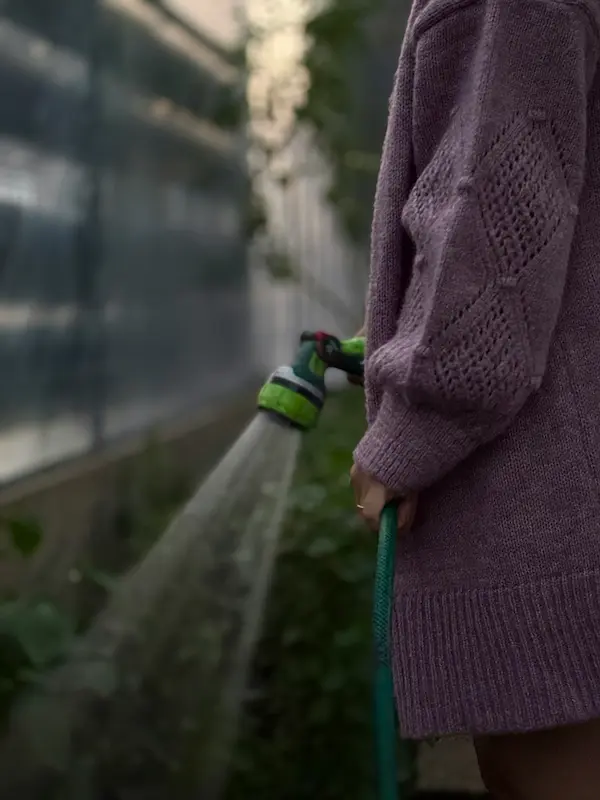

Péče o zahradu Mělník – zalévání, sekání, údržba
Údržba zahrady během dovolené i pravidelná péče • Mělník a okolí
Potřebujete pomoct s údržbou zahrady na Mělníku? Ať už jedete na dovolenou a potřebujete pravidelné zalévání, nebo hledáte někoho na sekání trávy a plení záhonů – postarám se o to, aby vaše zahrada zůstala krásná.
Působím na Mělníku a v blízkém okolí (Velký Borek, Malý Újezd, Liblice, Hořín, Kly). Do vzdálenějších obcí (nad 5 km) dojíždím za příplatek 12 Kč/km.

Služby péče o zahradu
Zalévání zahrady
Pravidelné zalévání záhonů, trávníku i okrasných rostlin. Frekvenci přizpůsobím počasí a potřebám vaší zahrady.
Zalévání pokojových rostlin
Během vaší nepřítomnosti se postarám i o pokojové rostliny. Každá květina má jiné potřeby – budu se řídit vašimi instrukcemi.
Sekání trávy
Sekání trávníku na požadovanou výšku. Cena podle velikosti zahrady a náročnosti terénu.
Plení záhonů
Odstraním plevel ze záhonů, aby vaše rostliny měly dostatek prostoru a živin.
Úprava záhonů
Drobné úpravy záhonů, kypření půdy, dosázení rostlin podle vašich přání.
Sezónní údržba
Hrabání listí, příprava zahrady na zimu, jarní úklid – údržba zahrady po celý rok.
Co nezajišťuji
Nezajišťuji těžké zahradní práce – kácení stromů, stěhování těžkých předmětů, terénní úpravy nebo stavební práce na zahradě.
Ceník péče o zahradu
| Služba | Cena |
|---|---|
| Zalévání zahrady – malá (do 100 m²) | 350 Kč |
| Zalévání zahrady – střední (100-300 m²) | 550 Kč |
| Zalévání zahrady – velká (nad 300 m²) | od 750 Kč |
| Zalévání pokojových rostlin (do 10 ks) | 300 Kč |
| Zalévání pokojových rostlin (10-20 ks) | 450 Kč |
| Drobná údržba (plení, sekání, úpravy) | 480 Kč/h |
Doprava v Mělníku: paušál 50 Kč/výjezd. Mimo Mělník (nad 5 km): +12 Kč/km. Minimální zakázka 350 Kč.
Kompletní ceníkJedete na dovolenou?
Péči o zahradu lze kombinovat s hlídáním domu nebo péčí o zvířata. Napište mi a připravím individuální kalkulaci na míru.
Poptat kombinaciČasté otázky
Podle domluvy a potřeb rostlin – denně, obden, nebo několikrát týdně. Frekvenci přizpůsobím počasí a vašim požadavkům.
Ano, sekání trávy nabízím. Cena se odvíjí od velikosti zahrady a náročnosti terénu.
Ne. Nezajišťuji těžké práce jako kácení stromů, stěhování těžkých předmětů nebo terénní úpravy. Zaměřuji se na běžnou údržbu zahrady.
Ano, péče o zahradu během dovolené je jedna z mých hlavních služeb. Zajistím pravidelné zalévání i drobnou údržbu.
Ano. Péči o zahradu lze kombinovat s hlídáním domu nebo zvířat. Napište mi pro individuální kalkulaci.
Ozvěte se mi
Napište mi nebo zavolejte a domluvíme se na péči o vaši zahradu.